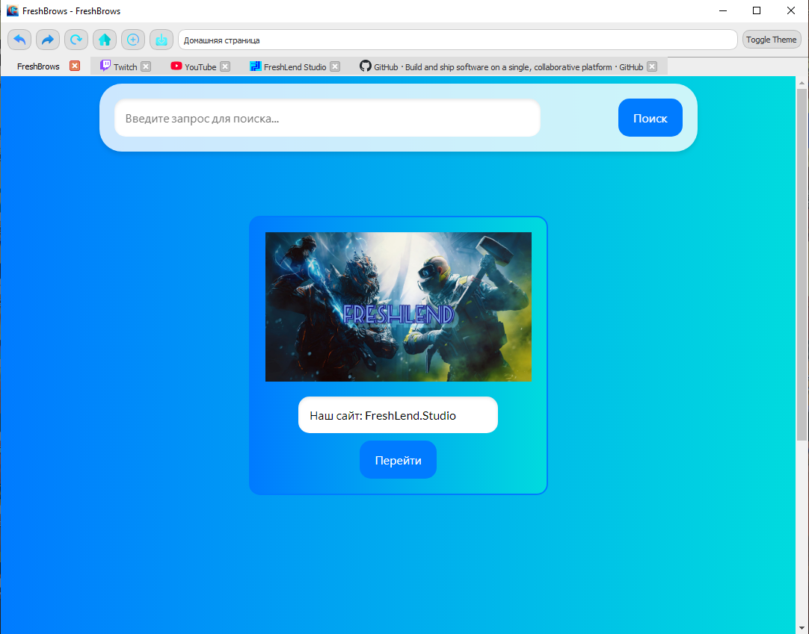
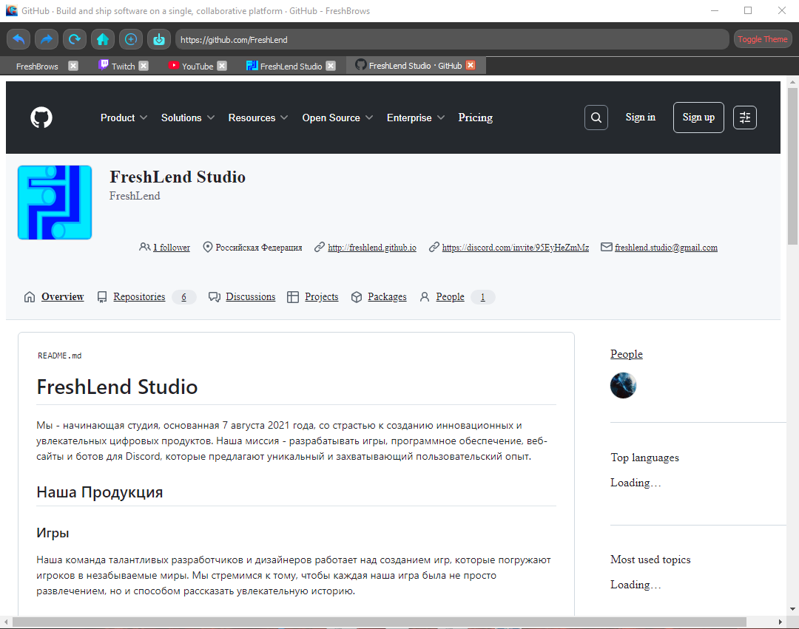

Изображение 1/2

FreshBrows ЗАБРОШЕНО
FreshBrows - это экспериминтальный простой браузер, написанный на Python
Он создан для тех, кто ищет простой и быстрый способ просматривать веб-страницы без лишних функций.
Простой интерфейс: FreshBrows имеет простой и интуитивно понятный интерфейс, который позволяет быстро и легко находить нужные веб-страницы.
Быстрое время загрузки: благодаря минималистичному дизайну, FreshBrows загружает веб-страницы быстро и эффективно.
Версии и обновления
Версия 1.1.0
13 апреля 2024Изменение дизайна.
Новые дизайн:
- Обновлена страница браузера
Версия 1.0.0
11 февраля 2024Начало FreshBrows.
Плюсы:
- Не требователен к ПК
- Всё необходимое для удобного использования
Минусы:
- Не сохраняет вкладки
- Не сохраняет вход в Google аккаунт
- Некоторые видео на YouTube чаще всего прямые эфиры выдают ошибку
- Нельзя ничего скачать